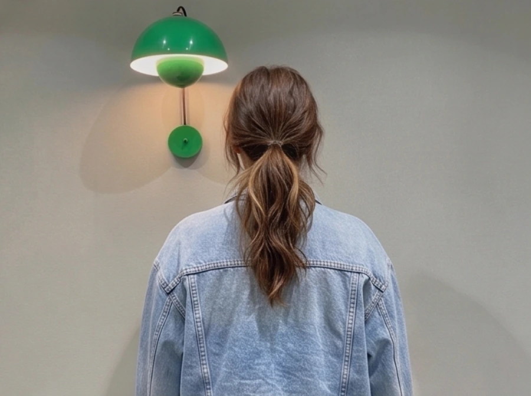
【大橋さん（24歳）前職：風力発電機の部品検査 ➔ 機械エンジニア】現場で図面を見ながら部品を検査するなかで「自分も設計側（上流工程）に挑戦したい」と思い、未経験からキャドガクで学習を決意。働きながらスキマ時間でオンラインで講師と学べたので、入校から40日間で機械エンジニアとして正社員転職ができました！
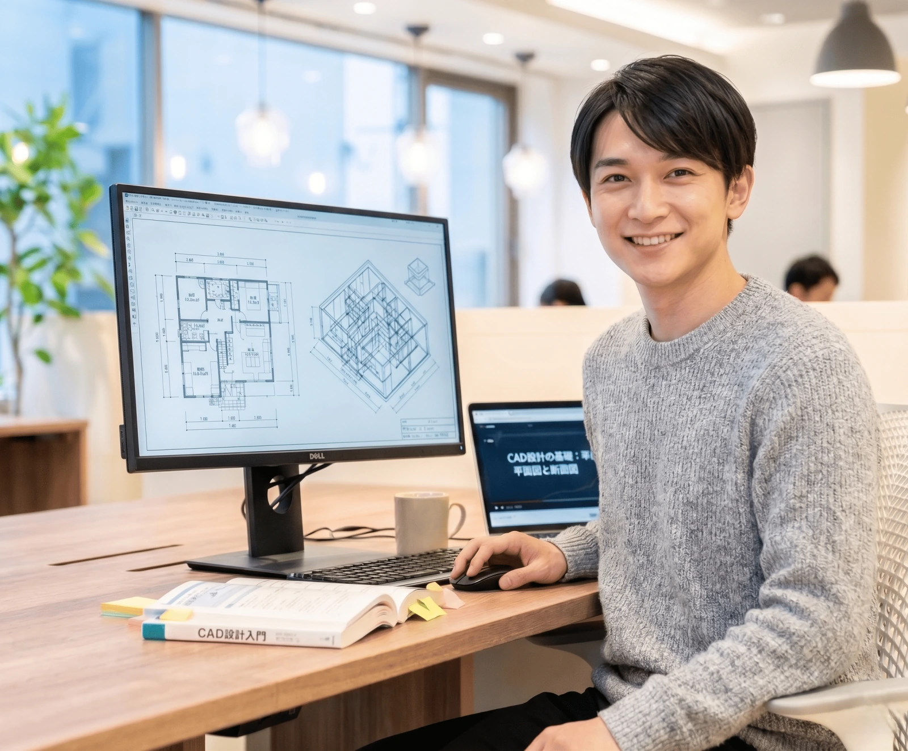
CHECK
未経験だけど、手に職をつけて安定したい
CADに興味はあるけど、スクール費用が高くて踏み出せない
「無料」と書いてるけど、本当に追加費用はないの？
20代のうちに正社員として転職したい
フリーター・第二新卒で、学歴や職歴に自信がない
働きながら・自宅からスキマ時間で学びたい
＼ まずはお気軽にご参加ください ／
簡単３ステップ！！ 無料オンライン説明会に申し込む
キャドガクは最短30日間で
CADスキルの習得から、
就職まで目指すことができる
完全無料のオンライン
CADスクールです
※1 受講者を対象とした自社アンケート調査：調査期間2026年1月〜2026年6月
※2 運営会社（株式会社keeQ）によるCAD学習者の就活サポート実績：調査期間2025年1月〜2026年6月
受講料も追加費用も0円。
その理由は「企業がスポンサー」だから。
当スクールは、採用企業様から「採用手数料・協賛金」をいただく仕組みで運営しています。そのため、受講生の皆様は受講料を一切負担することなく研修を受けられます。一部スクールでは研修中の離脱や就職できなかった場合に違約金が発生しますが、当スクールは就職支援に自信があるからこそ「完全無料」で運営しています。
他社スクールでは30万〜70万円の費用がかかり、ローンの支払いに追われるケースも少なくありません。キャドガクなら金銭的な不安を感じることなく、精神的なゆとりを持って学習に集中いただけます。
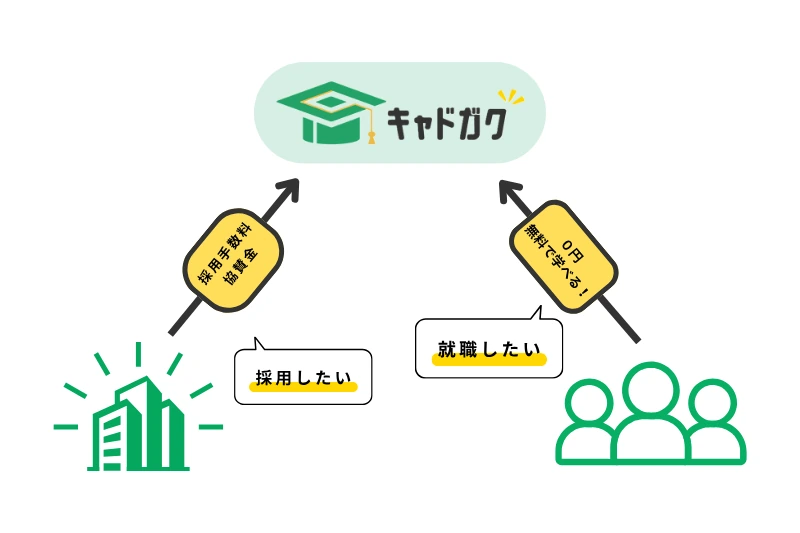
| 項目 | キャドガク | A社 | B社 | C社 |
|---|---|---|---|---|
| 受講料 | 完全無料 | 一部無料 （教材費／CADは自己負担） |
20〜40万円 | 40〜70万円 |
| 受講形式 | オンライン | 対面 | オンライン | 対面／オンライン |
| 就職先 | 正社員 | 派遣社員 （スクールが派遣元） |
記載なし | 派遣社員 （グループ会社が派遣元） |
| 受講期間 | 1ヶ月以内 | 15～20日間 | 6〜12か月 | 6〜12か月 |
※2026年5月時点の自社調査
事務職
飲食店員
営業職
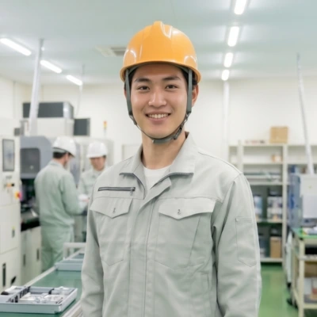
製造業
コンビニ店員
事務職
飲食店員
営業職
製造業
コンビニ
事務職
飲食店員
営業職
製造業
コンビニ
※写真はイメージです
未経験からの就職に「本当に必要なスキル・知識」を採用企業にヒアリングし、効率的で就職に有利なカリキュラムを受講できます。余計な内容を含まないため、学習のモチベーションを維持し、無駄なく最短ルートで就職ができます。また、業界を問わず就職に有利な「AutoCAD」を使用。圧倒的な汎用性と、あらゆる設計業務の基礎となるソフトなので、他のCADソフトにもスムーズに対応できる土台が身に付きます。採用企業が未経験者にまず求める「AutoCADの基礎力」を、キャドガクでは最短ルートで徹底的に身につけられます。
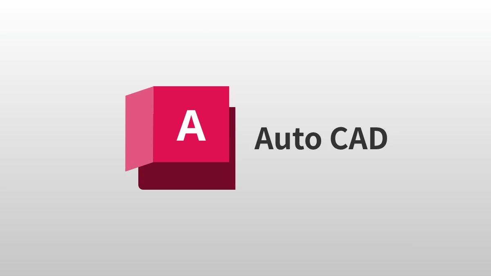
平日10:00〜22:00の間で、講師とのマンツーマン指導がオンラインで受け放題。仕事終わりの帰宅後やカフェなど、場所を問わずスキマ時間を活用してスキルを習得できます。
学習はすべてオンラインで完結。地方在住の方でも、忙しい社会人でも、自宅にいながら未経験からCADスキルを習得できます。
予約不要でいつでもオンラインにアクセスし、現役講師に直接質問できるので、自己学習にありがちな「つまずき」による挫折・学習モチベーションの低下を防止しています。立ち止まることなくスムーズに学習を進められる点もキャドガクの特徴です。
現役講師とキャリアアドバイザーが学習面と就活支援であなた専用のチームを結成。受講生1名に対しプロ2名体制で進捗を管理するので、一緒に就職まで伴走します。
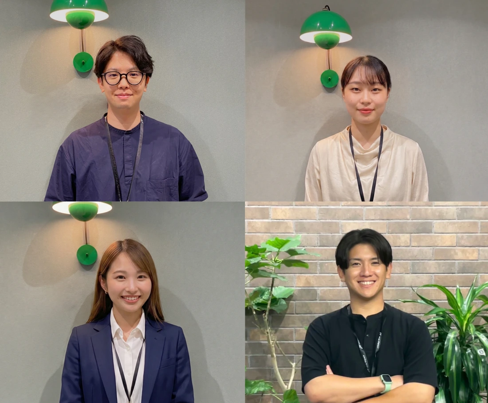
未経験が最も悩む書類を、弊社側でベースの7〜8割を作成。残りをご自身の言葉で仕上げ、圧倒的な書類通過率を実現します。
経歴に基づく想定質問でマンツーマン模擬面接を実施。企業ごとの面接データを活用したピンポイント対策が可能です。
企業の約9割が導入する性格診断・能力テスト。攻略を熟知した専門アドバイザーが各企業のツールに合わせた対策を行います。
マッチした企業を厳選してご紹介。日程調整など面倒な事務はすべて代行するため、あなたは面接に100%集中できます。
CADは業界・職種がとにかく豊富。
あなたの「好き」や「強み」を活かせる
活躍フィールドが必ず見つかります。
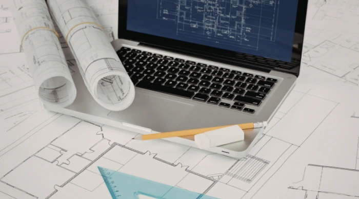
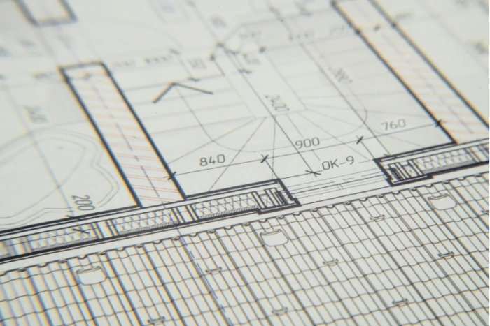
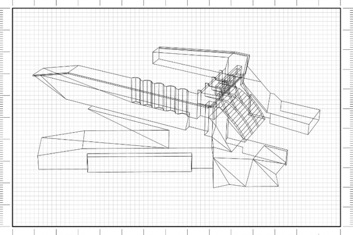
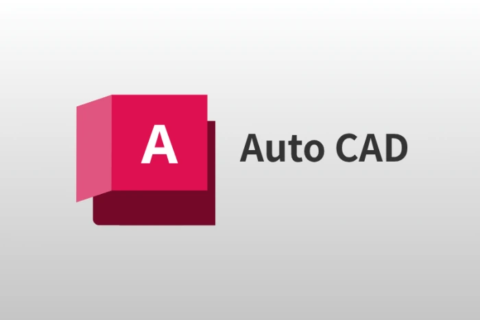
＼ カードにマウスを乗せると停止します ／

【大橋さん（24歳）前職：風力発電機の部品検査 ➔ 機械エンジニア】現場で図面を見ながら部品を検査するなかで「自分も設計側（上流工程）に挑戦したい」と思い、未経験からキャドガクで学習を決意。働きながらスキマ時間でオンラインで講師と学べたので、入校から40日間で機械エンジニアとして正社員転職ができました！
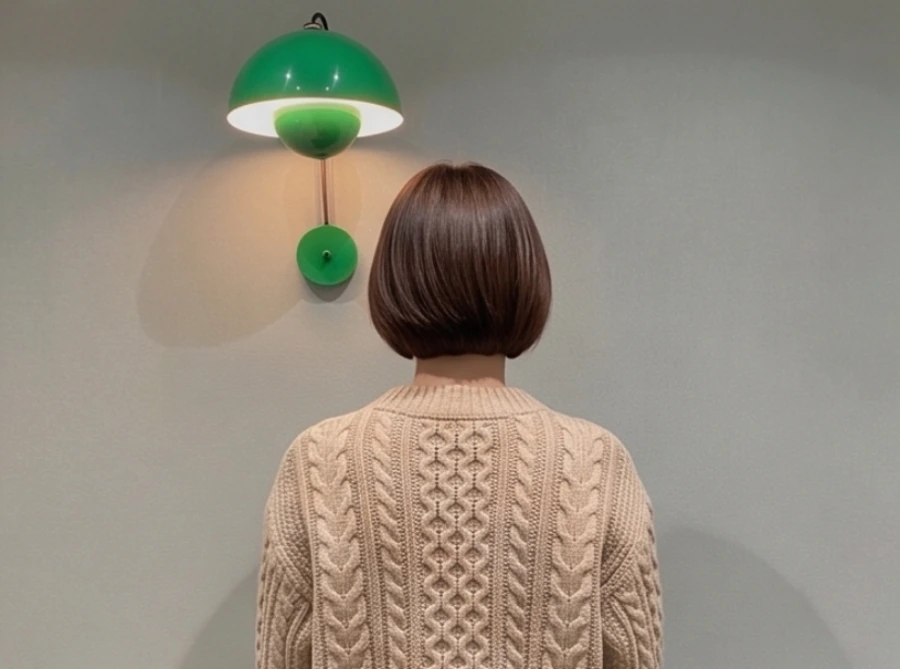
【佐々木さん（29歳）前職：アパレル店長 ➔ 建築CADオペレーター】販売職を5年間経験し、20代最後に「将来のために手に職をつけたい」と一念発起。完全未経験でしたが、平日10〜22時いつでも講師に質問できる環境が大きな支えに。年齢や職歴の不安も専任アドバイザーが企業目線の選考対策でカバーしてくれ、建築CADオペレーターへ新しいキャリアの一歩を踏み出せました！
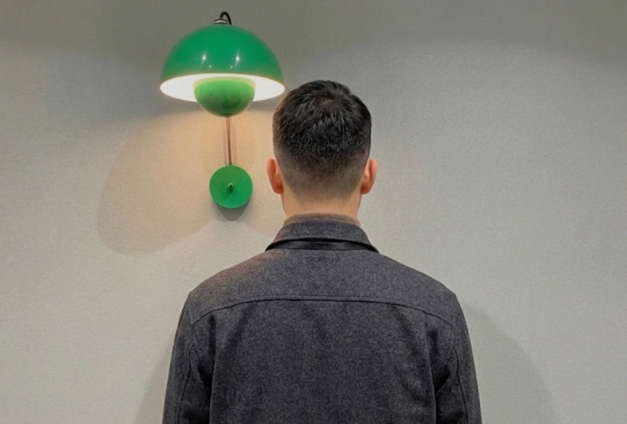
【黒光さん（26歳）前職：住宅設備メーカー（鋳造・成形）➔ 機械エンジニア】高校卒業後、約7年間製造に携わり「より上流工程の設計職で市場価値を高めたい」と考えキャドガクを受講。現場経験という強みと業界シェアの高い「AutoCAD」の基礎を徹底学習し、採用企業から高評価を獲得。プロ2名体制のサポートが自信に繋がり、未経験から憧れの機械エンジニアへ転職できました！
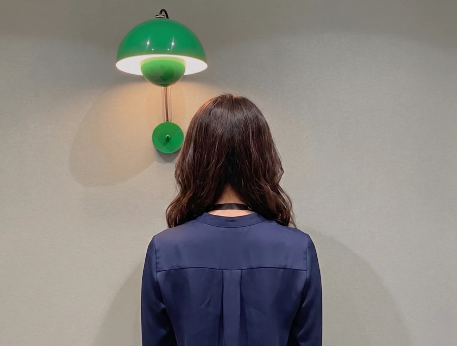
【蒲田さん（27歳）前職：冠婚葬祭会社で事務職 ➔ 建築CADオペレーター】事務職を続ける中で「一生モノの手に職をつけ、就職まで一気通貫でサポートしてくれるスクール」を探していました。学習を進めるうちにCADの面白さにのめり込み、機械と建築の両方で内定を獲得！一番家から近く条件の良い建築CADオペレーターへ転職を決めました。
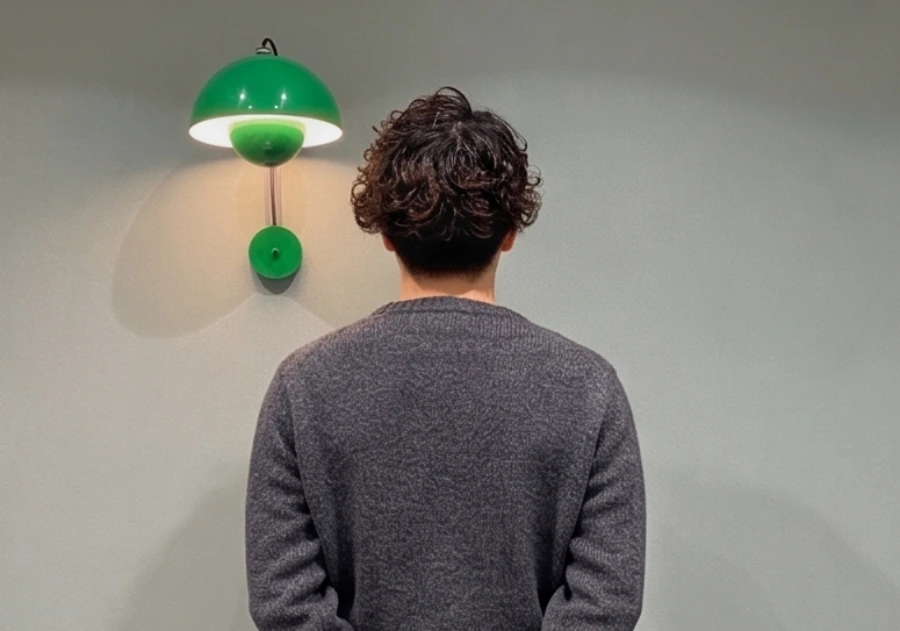
【寺田さん（30歳）前職：接客業（派遣社員）➔ 建築施工管理】大学卒業後は派遣を転々とし、正社員経験がないことに強い焦りを感じていました。需要のある専門職に就くためCADを学習。図面を見る楽しさに触れ、前職の接客で培ったコミュニケーション力を武器に、未経験から施工管理職への正社員就職を勝ち取りました！
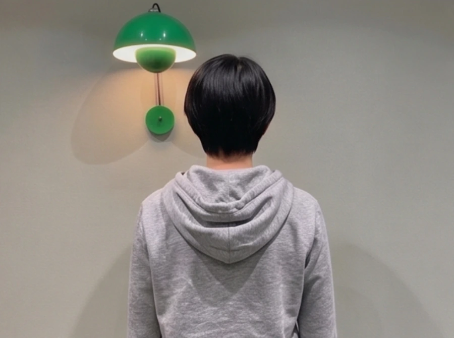
【三島さん（23歳）前職：半導体製造の製品検査（派遣社員）➔ 機械エンジニア】専門学校卒業後、派遣で半導体製造の検査をしていました。学生時代に触れたAutoCADの楽しさを思い出し「もっと手に職をつけ、上流工程の設計職で働きたい」とキャドガクで再学習。手厚いサポートで見事に機械エンジニアへのキャリアアップを果たしました。
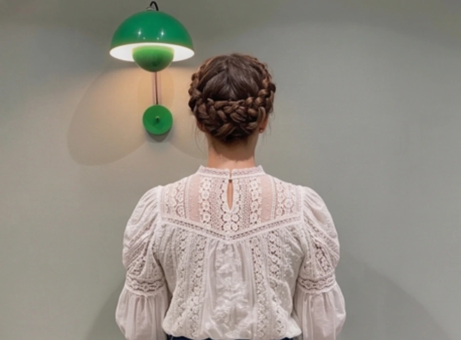
【吉田さん（26歳）前職：アパレルパタンナー（服飾専門卒）➔ インテリアデザイナー】服飾専門卒でパタンナーとしてアパレル用CADを使用していましたが、業界の縮小を感じ転身を決意。汎用性の高いキャドガクでCADを学習しました。CADの経験が評価され、未経験では難関のインテリアデザイナーへ転職を成功させました！
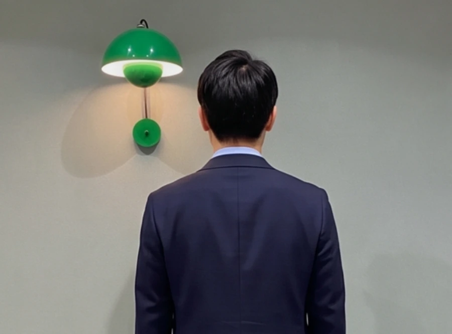
【杉内さん（29歳）前職：法律事務所の事務職 ➔ 機械エンジニア】激務のわりに将来的なスキルが残らない現状に不満を抱いていました。趣味の3Dプリンターでのモノづくりをきっかけに機械エンジニアを目指して入校。有給消化の期間をフル活用して集中学習した結果、なんと入校からわずか32日間で機械エンジニアへの転職を成功させました！
【中川さん（26歳）前職：ITエンジニア ➔ 大手住宅メーカーの住宅設計職】ITエンジニアをしていましたが、仕事がAIに代替されていくのを実感し将来性に不安を覚えていました。「AIに奪われない現実世界のモノづくり」を求めてCADに出会い入校。ITで培った論理的思考が評価され、大手住宅メーカーから住宅設計職の内定をいただきました！
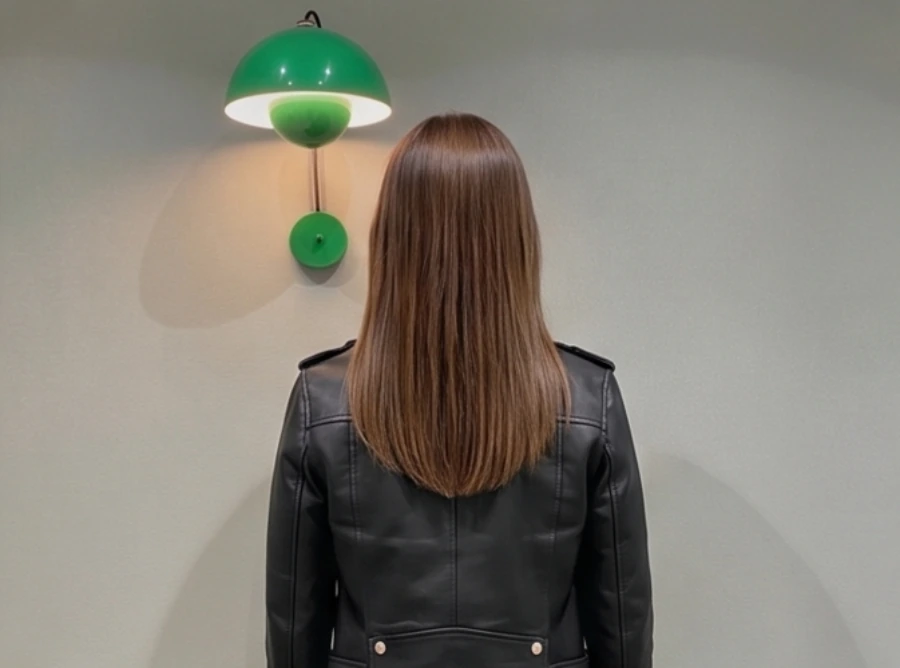
【加藤さん（30歳）前職：パティシエ（約10年間）➔ 建築施工管理】パティシエとして10年勤めマネージャーまで昇格しましたが、業界の縮小に不安を感じ「長く続けられる手に職」を求め入校。壮大な建造物を作り上げる施工管理に魅力を感じ転職。現場ではCADの図面修正も多く、キャドガクで身につけたスキルをそのまま活かせています！
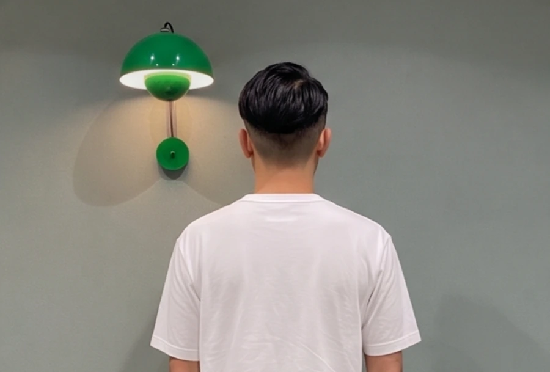
【梅岡さん（25歳）前職：海上自衛隊（機械整備員）➔ 機械エンジニア】前職は海上自衛隊で機械整備員としてメンテナンスに従事。「壊れたものを直す現場作業ではなく、1から製品を生み出す設計の領域に行きたい」という熱意で入校。現場の知見とCAD設計スキルを掛け合わせ、憧れの機械エンジニアへの転職を決定させました。
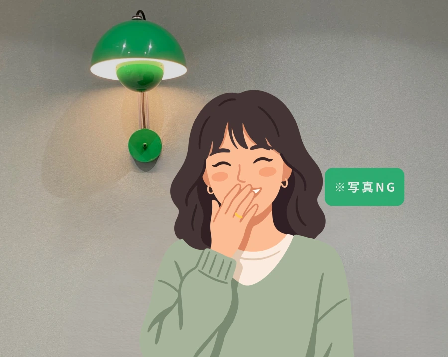
【野田さん（28歳）前職：部品製造と梱包作業 ➔ 機械エンジニア】工場での単純な現場作業の毎日から「もっと頭を使うクリエイティブな仕事に就きたい」と悩んでいました。現場でCAD図面を見ていた経験から入校。実際のモノづくりを知る現場経験と高い学習意欲が評価され、未経験から機械エンジニアとして転職を果たしました。
【青柳さん（26歳）前職：管理栄養士 ➔ 設備CADオペレーター】将来のために一生モノの専門職を身につけたいと考え、自分の「細かな作業に集中できる強み」を活かせるCADに出会い入校。完全未経験で不安もありましたが、手厚い就職サポートと個別指導のおかげで、なんと3社から内定を獲得し設備CADオペレーターに転職できました！
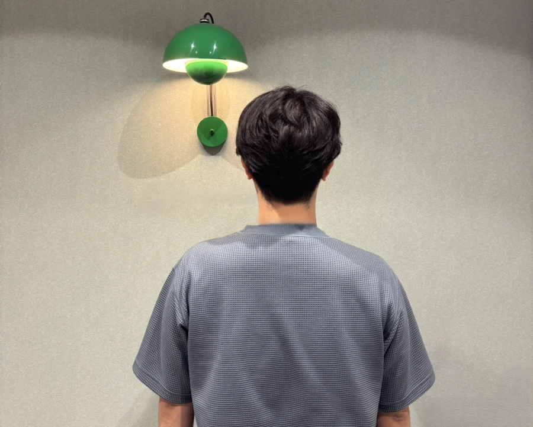
【遠藤さん（24歳）前職：人材派遣の営業職 ➔ 土木CADオペレーター】人材派遣の営業でCADやエンジニア案件を多く扱う中で「自分自身がプレイヤーになりたい」と思い入校。市場規模が大きく、未経験から入りやすくて需要も高い「土木CADオペレーター」として戦略的な転職を成功させました。
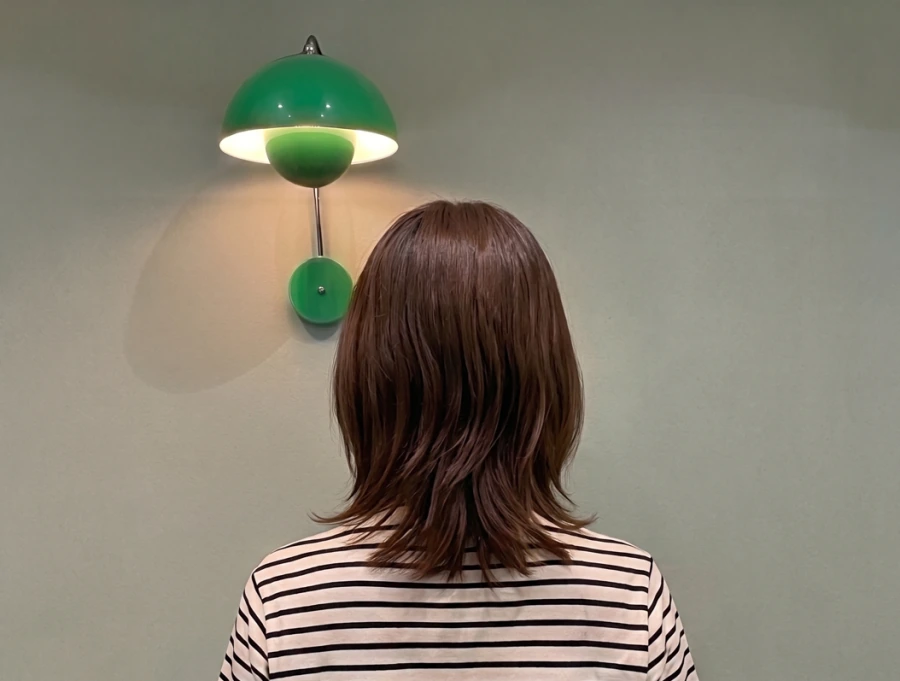
【高橋さん（22歳）前職：雑貨ブランドで営業事務 ➔ 機械エンジニア（航空機設計）】「事務職はいずれAIに代替されるのでは」という危機感から手に職をつけたいと入校。学習や就活に不安がありましたが、手厚いサポートと高い学習意欲で急速に成長。就職難易度の極めて高い、航空機をメインに設計している大手企業に機械エンジニアとして転職できました！
【大橋さん（24歳）前職：風力発電機の部品検査 ➔ 機械エンジニア】現場で図面を見ながら部品を検査するなかで「自分も設計側（上流工程）に挑戦したい」と思い、未経験からキャドガクで学習を決意。働きながらスキマ時間でオンラインで講師と学べたので、入校から40日間で機械エンジニアとして正社員転職ができました！
【佐々木さん（29歳）前職：アパレル店長 ➔ 建築CADオペレーター】販売職を5年間経験し、20代最後に「将来のために手に職をつけたい」と一念発起。完全未経験でしたが、平日10〜22時いつでも講師に質問できる環境が大きな支えに。年齢や職歴の不安も専任アドバイザーが企業目線の選考対策でカバーしてくれ、建築CADオペレーターへ新しいキャリアの一歩を踏み出せました！
【黒光さん（26歳）前職：住宅設備メーカー（鋳造・成形）➔ 機械エンジニア】高校卒業後、約7年間製造に携わり「より上流工程の設計職で市場価値を高めたい」と考えキャドガクを受講。現場経験という強みと業界シェアの高い「AutoCAD」の基礎を徹底学習し、採用企業から高評価を獲得。プロ2名体制のサポートが自信に繋がり、未経験から憧れの機械エンジニアへ転職できました！
【蒲田さん（27歳）前職：冠婚葬祭会社で事務職 ➔ 建築CADオペレーター】事務職を続ける中で「一生モノの手に職をつけ、就職まで一気通貫でサポートしてくれるスクール」を探していました。学習を進めるうちにCADの面白さにのめり込み、機械と建築の両方で内定を獲得！一番家から近く条件の良い建築CADオペレーターへ転職を決めました。
【寺田さん（30歳）前職：接客業（派遣社員）➔ 建築施工管理】大学卒業後は派遣を転々とし、正社員経験がないことに強い焦りを感じていました。需要のある専門職に就くためCADを学習。図面を見る楽しさに触れ、前職の接客で培ったコミュニケーション力を武器に、未経験から施工管理職への正社員就職を勝ち取りました！
【三島さん（23歳）前職：半導体製造の製品検査（派遣社員）➔ 機械エンジニア】専門学校卒業後、派遣で半導体製造の検査をしていました。学生時代に触れたAutoCADの楽しさを思い出し「もっと手に職をつけ、上流工程の設計職で働きたい」とキャドガクで再学習。手厚いサポートで見事に機械エンジニアへのキャリアアップを果たしました。
【吉田さん（26歳）前職：アパレルパタンナー（服飾専門卒）➔ インテリアデザイナー】服飾専門卒でパタンナーとしてアパレル用CADを使用していましたが、業界の縮小を感じ転身を決意。汎用性の高いキャドガクでCADを学習しました。CADの経験が評価され、未経験では難関のインテリアデザイナーへ転職を成功させました！
【杉内さん（29歳）前職：法律事務所の事務職 ➔ 機械エンジニア】激務のわりに将来的なスキルが残らない現状に不満を抱いていました。趣味の3Dプリンターでのモノづくりをきっかけに機械エンジニアを目指して入校。有給消化の期間をフル活用して集中学習した結果、なんと入校からわずか32日間で機械エンジニアへの転職を成功させました！
【中川さん（26歳）前職：ITエンジニア ➔ 大手住宅メーカーの住宅設計職】ITエンジニアをしていましたが、仕事がAIに代替されていくのを実感し将来性に不安を覚えていました。「AIに奪われない現実世界のモノづくり」を求めてCADに出会い入校。ITで培った論理的思考が評価され、大手住宅メーカーから住宅設計職の内定をいただきました！
【加藤さん（30歳）前職：パティシエ（約10年間）➔ 建築施工管理】パティシエとして10年勤めマネージャーまで昇格しましたが、業界の縮小に不安を感じ「長く続けられる手に職」を求め入校。壮大な建造物を作り上げる施工管理に魅力を感じ転職。現場ではCADの図面修正も多く、キャドガクで身につけたスキルをそのまま活かせています！
【梅岡さん（25歳）前職：海上自衛隊（機械整備員）➔ 機械エンジニア】前職は海上自衛隊で機械整備員としてメンテナンスに従事。「壊れたものを直す現場作業ではなく、1から製品を生み出す設計の領域に行きたい」という熱意で入校。現場の知見とCAD設計スキルを掛け合わせ、憧れの機械エンジニアへの転職を決定させました。
【野田さん（28歳）前職：部品製造と梱包作業 ➔ 機械エンジニア】工場での単純な現場作業の毎日から「もっと頭を使うクリエイティブな仕事に就きたい」と悩んでいました。現場でCAD図面を見ていた経験から入校。実際のモノづくりを知る現場経験と高い学習意欲が評価され、未経験から機械エンジニアとして転職を果たしました。
【青柳さん（26歳）前職：管理栄養士 ➔ 設備CADオペレーター】将来のために一生モノの専門職を身につけたいと考え、自分の「細かな作業に集中できる強み」を活かせるCADに出会い入校。完全未経験で不安もありましたが、手厚い就職サポートと個別指導のおかげで、なんと3社から内定を獲得し設備CADオペレーターに転職できました！
【遠藤さん（24歳）前職：人材派遣の営業職 ➔ 土木CADオペレーター】人材派遣の営業でCADやエンジニア案件を多く扱う中で「自分自身がプレイヤーになりたい」と思い入校。市場規模が大きく、未経験から入りやすくて需要も高い「土木CADオペレーター」として戦略的な転職を成功させました。
【高橋さん（22歳）前職：雑貨ブランドで営業事務 ➔ 機械エンジニア（航空機設計）】「事務職はいずれAIに代替されるのでは」という危機感から手に職をつけたいと入校。学習や就活に不安がありましたが、手厚いサポートと高い学習意欲で急速に成長。就職難易度の極めて高い、航空機をメインに設計している大手企業に機械エンジニアとして転職できました！
※学習スピードには個人差があります。
平均1.5ヶ月で研修が終了し、就職活動に移行しています。
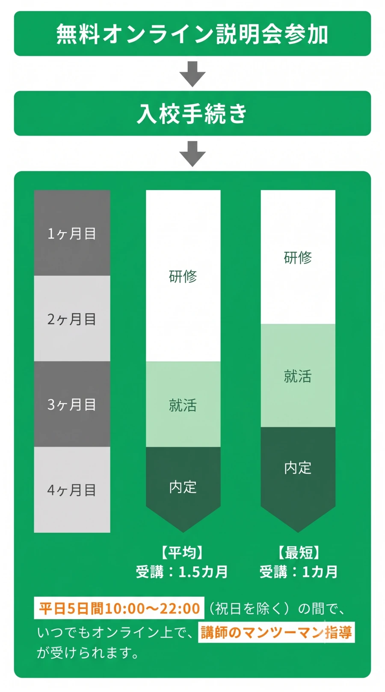
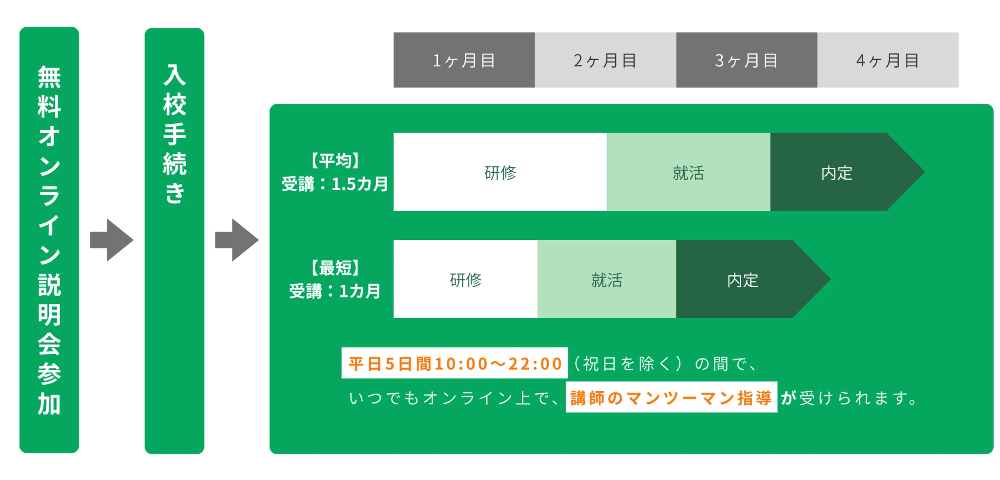
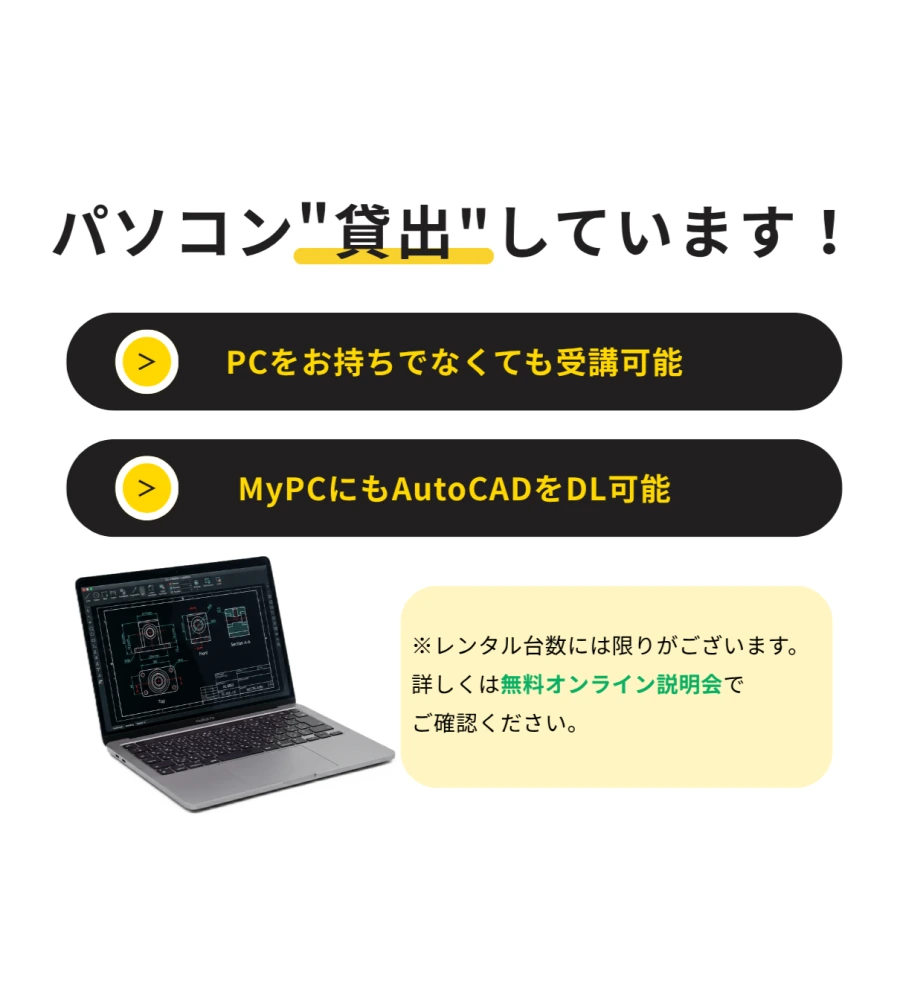
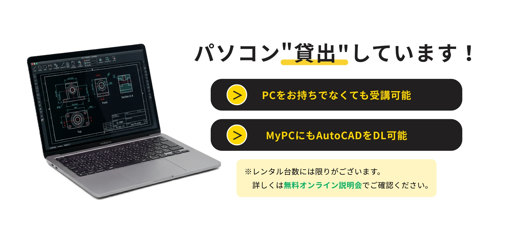
当スクールは、提携する企業様からいただく協賛金や採用手数料によって運営が成り立っています。「専門技術を身につけたいけれど、高額な受講料が払えない」という方でも、無料で受講し、未経験から就職できる仕組みを作りました。
業界事情に精通した専任のキャリアアドバイザーが在籍しているからです。企業が求める人物像を把握しており、履歴書・職務経歴書の添削から面接対策まで、あなたに合わせた個別の就職支援を徹底して行うため、高い内定獲得力を持っております。
一切かかりません。やむを得ず途中で辞めてしまった場合や、万が一就職に至らなかった場合でも、違約金やその他の費用をご請求することは一切ございませんのでご安心ください。
学歴や職歴に自信がなくても受講可能です。実際にニートやフリーター、他業界の方が未経験から学習し、就職を目指している方がいらっしゃいます。
当スクールでは、平日10時〜22時の間、予約不要で、いつでも講師とオンラインで繋がり、マンツーマン指導が受けられます。「わからない所で立ち止まる」ことがないため、自己学習にありがちなモチベーションの低下を防ぎ、スムーズに学習を進められます。
ご安心ください。未経験からでも安心してキャリアを築ける優良企業を厳選してご紹介しています。ただし、人気企業は採用ハードルが高くなる傾向があるため、皆様のご経歴やご希望を丁寧にヒアリングした上で、最適な企業をご提案いたします。
可能です。パソコンの貸し出し相談もできます。
かかりません。受講生からは一切お金をいただきません。
お好きなタイミングでいつでも開始していただけます。ご自身のスケジュールに合わせて開始日をお決めください。
豊洲営業所
〒135-0061
東京都江東区豊洲5丁目6-36 豊洲プライムスクエア10F
東京メトロ有楽町線「豊洲」駅 6a番出口から徒歩5分